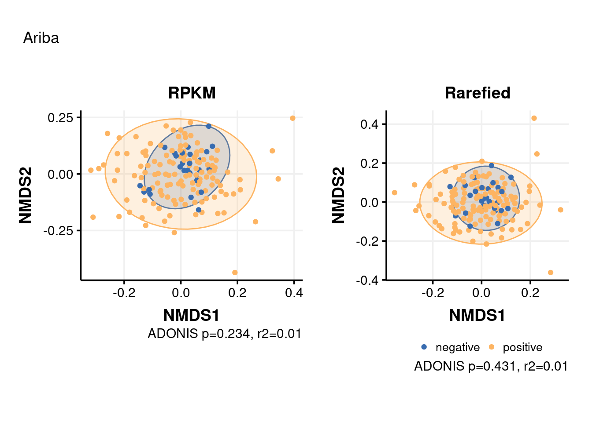
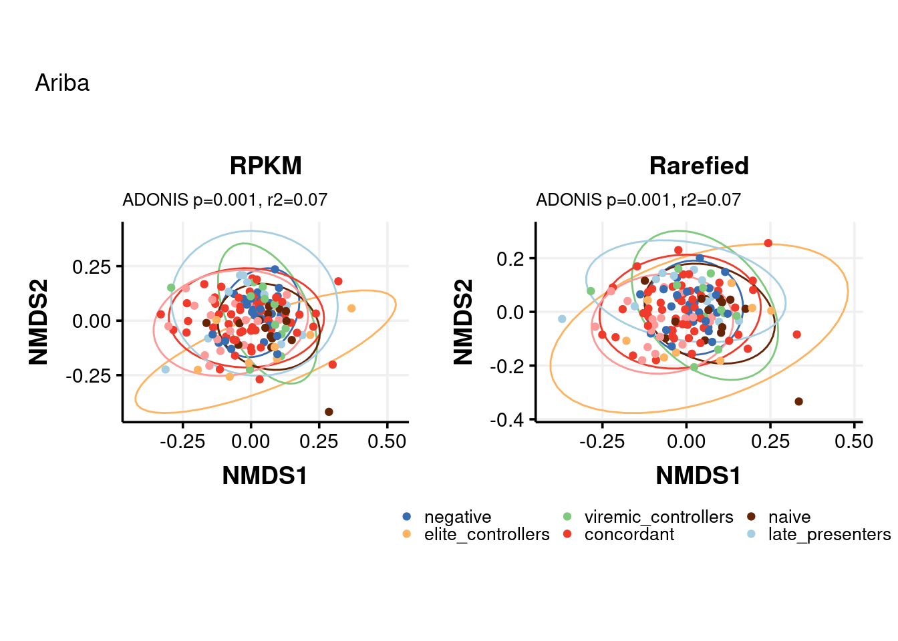
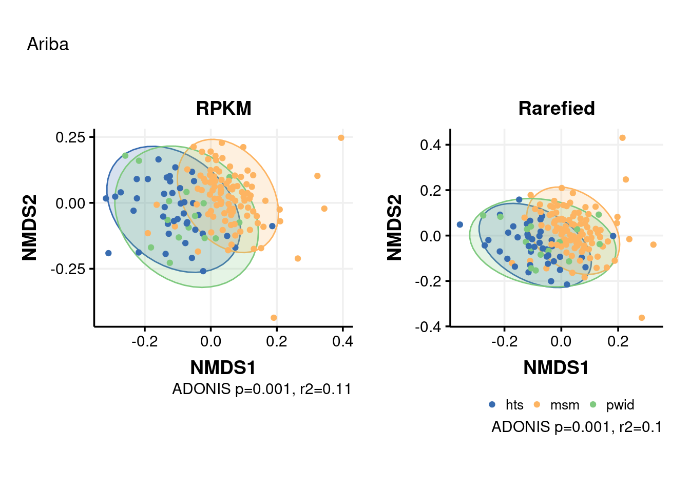
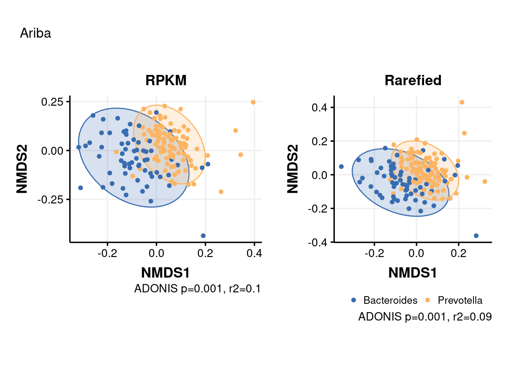
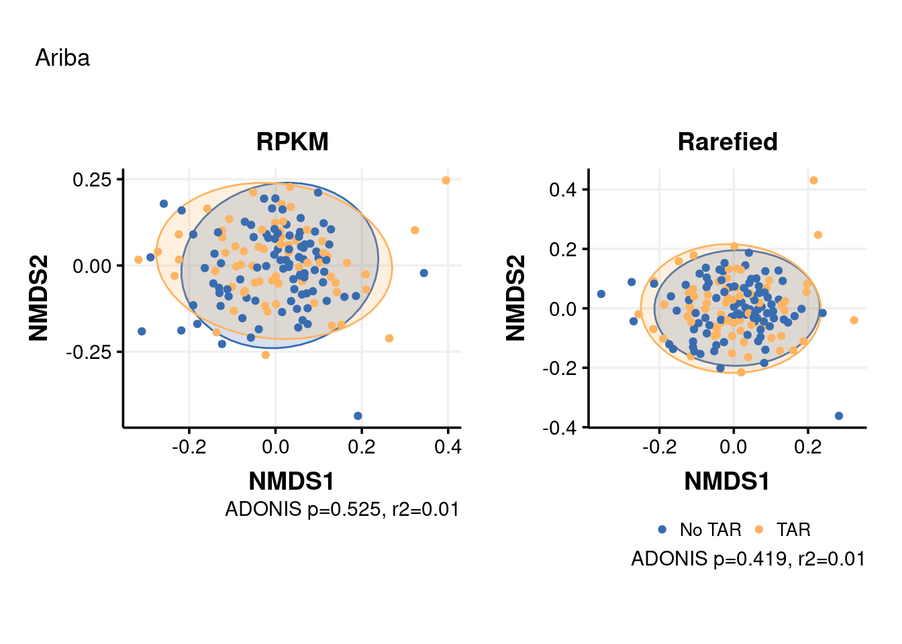
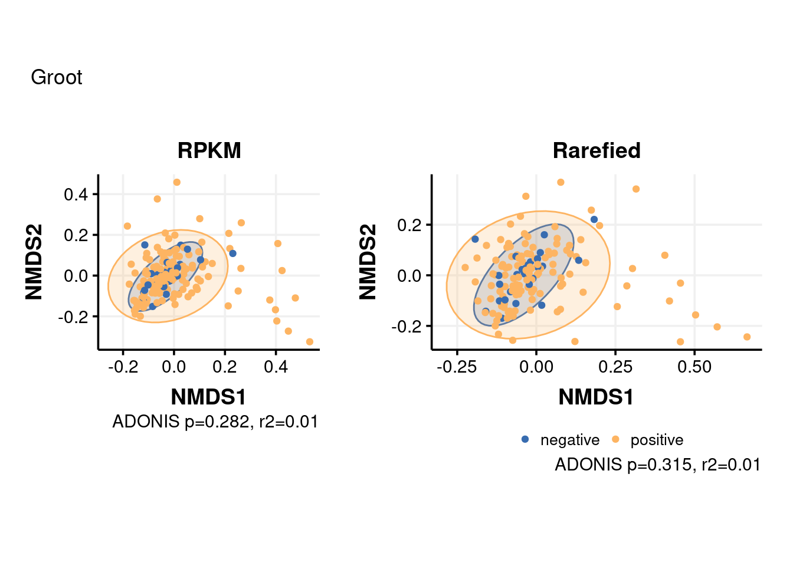

Beta diversity analysis
Elisa Rubio
2022-03-06
Last updated: 2022-12-23
Checks: 6 1
Knit directory: 2022_Rubio_MetaHIV/
This reproducible R Markdown analysis was created with workflowr (version 1.7.0). The Checks tab describes the reproducibility checks that were applied when the results were created. The Past versions tab lists the development history.
The R Markdown file has unstaged changes. To know which version of
the R Markdown file created these results, you’ll want to first commit
it to the Git repo. If you’re still working on the analysis, you can
ignore this warning. When you’re finished, you can run
wflow_publish to commit the R Markdown file and build the
HTML.
Great job! The global environment was empty. Objects defined in the global environment can affect the analysis in your R Markdown file in unknown ways. For reproduciblity it’s best to always run the code in an empty environment.
The command set.seed(20220202) was run prior to running
the code in the R Markdown file. Setting a seed ensures that any results
that rely on randomness, e.g. subsampling or permutations, are
reproducible.
Great job! Recording the operating system, R version, and package versions is critical for reproducibility.
Nice! There were no cached chunks for this analysis, so you can be confident that you successfully produced the results during this run.
Great job! Using relative paths to the files within your workflowr project makes it easier to run your code on other machines.
Great! You are using Git for version control. Tracking code development and connecting the code version to the results is critical for reproducibility.
The results in this page were generated with repository version 0145fcb. See the Past versions tab to see a history of the changes made to the R Markdown and HTML files.
Note that you need to be careful to ensure that all relevant files for
the analysis have been committed to Git prior to generating the results
(you can use wflow_publish or
wflow_git_commit). workflowr only checks the R Markdown
file, but you know if there are other scripts or data files that it
depends on. Below is the status of the Git repository when the results
were generated:
Ignored files:
Ignored: .Rhistory
Ignored: .Rproj.user/
Ignored: analysis/.Rhistory
Ignored: output/aribaData/
Ignored: output/grootData/
Untracked files:
Untracked: PEC3/alpha_div_nosig.png
Untracked: analysis/06_group_matrixes.Rmd
Untracked: analysis/07_biplots.Rmd
Untracked: analysis/08_differentially_abundant.Rmd
Untracked: analysis/amr_significance.Rmd
Untracked: analysis/biplot_envfit.Rmd
Untracked: analysis/biplot_spearman.Rmd
Untracked: analysis/counts.Rmd
Untracked: analysis/gene_richness.Rmd
Untracked: analysis/grouped_significance.Rmd
Untracked: analysis/import_virulome.Rmd
Untracked: analysis/import_virulome_data.Rmd
Unstaged changes:
Deleted: analysis/01_1_import_virulome.Rmd
Deleted: analysis/01_2_import_virulome_data.Rmd
Modified: analysis/02_summarize_data.Rmd
Modified: analysis/03_1_procruster.Rmd
Deleted: analysis/04_01_counts.Rmd
Modified: analysis/04_alpha_div.Rmd
Modified: analysis/05_beta_div.Rmd
Deleted: analysis/06_2_biplot_envfit.Rmd
Deleted: analysis/06_biplot.Rmd
Deleted: analysis/07_heatmap.Rmd
Deleted: analysis/08_amr_significance.Rmd
Deleted: analysis/09_group_matrixes.Rmd
Deleted: analysis/10_grouped_significance.Rmd
Deleted: analysis/11_gene_richness.Rmd
Modified: analysis/PEC3.Rmd
Deleted: analysis/PEC3_biplots.Rmd
Modified: analysis/_site.yml
Modified: analysis/about.Rmd
Deleted: analysis/differentially_abundant.Rmd
Modified: analysis/index.Rmd
Modified: analysis/license.Rmd
Modified: code/functions.R
Modified: output/ariba_dist.RDA
Modified: output/envfit_rpkm_amr_corlev2.csv
Modified: output/envfit_rpkm_drugclass_corlev2.csv
Modified: output/envfit_rpkm_genefamily_corlev2.csv
Modified: output/envfit_rpkm_meta_top10.csv
Modified: output/genefamily_grich.xlsx
Modified: output/genefamily_mcluster.xlsx
Modified: output/genefamily_sexualp.xlsx
Modified: output/groot_dist.RDA
Modified: output/sumtable_grich.xlsx
Modified: output/sumtable_mcluster.xlsx
Modified: output/sumtable_sexualp.xlsx
Note that any generated files, e.g. HTML, png, CSS, etc., are not included in this status report because it is ok for generated content to have uncommitted changes.
These are the previous versions of the repository in which changes were
made to the R Markdown (analysis/05_beta_div.Rmd) and HTML
(docs/05_beta_div.html) files. If you’ve configured a
remote Git repository (see ?wflow_git_remote), click on the
hyperlinks in the table below to view the files as they were in that
past version.
| File | Version | Author | Date | Message |
|---|---|---|---|---|
| Rmd | 95e45d0 | Elisa | 2022-12-04 | pec3_themepublication |
| Rmd | db7333d | Elisa | 2022-11-26 | satnight |
| html | db7333d | Elisa | 2022-11-26 | satnight |
| html | 6d1d3c4 | Elisa_Linux | 2022-11-21 | 221122 |
| Rmd | 88d1345 | Elisa_Linux | 2022-11-18 | eccmid figures |
| Rmd | 961245a | Elisa | 2022-08-30 | better data organization and adding conclusions |
| html | 961245a | Elisa | 2022-08-30 | better data organization and adding conclusions |
| Rmd | d24c180 | Elisa_Linux | 2022-08-23 | biplot finish, beta div and alpha diversity microbiome cluster analysis |
| html | d24c180 | Elisa_Linux | 2022-08-23 | biplot finish, beta div and alpha diversity microbiome cluster analysis |
| Rmd | c5f0d18 | Elisa | 2022-08-21 | biplot test |
| Rmd | 95466a8 | Elisa | 2022-08-21 | Alpha diversity correlations with CD4 and pairwise comparison for betadiversity and riskgroup2 |
| html | 95466a8 | Elisa | 2022-08-21 | Alpha diversity correlations with CD4 and pairwise comparison for betadiversity and riskgroup2 |
library(tidyverse)
library(kableExtra)
library(vegan)
library(ggpubr)
library(glue)
library(patchwork)
library(ggthemes)Load summarized and rarefied data
load("output/summarized_ariba.RDA")
load("output/summarized_groot.RDA")
load("output/rarefied_ariba.RDA")
load("output/rarefied2500_groot.RDA")Prepare metadata
ART_groups<-c("concordant", "discordant ", "early_treated")
gene_richness<-read.delim2("data/Metadata/generichness_data.txt")%>%
select(SampleID, GCount)
metadata<-read_csv("data/Metadata/metadata.csv")%>%
mutate(ratio_CD4_CD8=CD4_absolute/CD8_absolute,
ART=ifelse(Profile %in% ART_groups, "TAR", "No TAR"),
MSM_dic=ifelse(RiskGroup2=="msm", "MSM", "no MSM"),
Profile=factor(Profile, levels = c("negative", "elite_controllers", "viremic_controllers",
"early_treated ", "concordant", "naive", "late_presenters",
"discordant")))%>%
inner_join(gene_richness, by="SampleID")Load functions
source("code/functions.R")Ariba
Calculate distances:
ariba_dist<-dist_func(ariba_rpkm, ariba_rar, metadata)HIV Status
p1<-beta_nmds(ariba_dist$dist_rpkm, metadata, HIV_Status)+labs(title="RPKM")+theme(legend.position = "none")
p2<-beta_nmds(ariba_dist$dist_rar, metadata, HIV_Status)+labs(title="Rarefied")
##beta_nmds(ariba_dist$dist_avgd, metadata, HIV_Status)+labs(title="Ariba", subtitle = "Bray Curtis distance matrix from rarefied counts (avgdist)")p1+p2+plot_annotation(title="Ariba")
Profile
p1<-beta_nmds2(ariba_dist$dist_rpkm, metadata, Profile)+labs(title="RPKM")+theme(legend.position = "none")
p2<-beta_nmds2(ariba_dist$dist_rar, metadata, Profile)+labs(title="Rarefied")
##beta_nmds2(ariba_dist$dist_avgd, metadata, Profile)+labs(title="Ariba", subtitle = "Bray Curtis distance matrix from rarefied counts (avgdist)")p1+p2+plot_annotation(title="Ariba")
Risk Group2
p1<-beta_nmds(ariba_dist$dist_rpkm, metadata, RiskGroup2)+labs(title="RPKM")+theme(legend.position = "none")
p2<-beta_nmds(ariba_dist$dist_rar, metadata, RiskGroup2)+labs(title="Rarefied")
##beta_nmds(ariba_dist$dist_avgd, metadata, RiskGroup2)+labs(title="Ariba", subtitle = "Bray Curtis distance matrix from rarefied counts (avgdist)")p1<-beta_nmds(ariba_dist$dist_rpkm, metadata, RiskGroup2)+labs(title="RPKM")+theme(legend.position = "none")
p2<-beta_nmds(ariba_dist$dist_rar, metadata, RiskGroup2)+labs(title="Rarefied")
##beta_nmds(ariba_dist$dist_avgd, metadata, RiskGroup2)+labs(title="Ariba", subtitle = "Bray Curtis distance matrix from rarefied counts (avgdist)")p1+p2+plot_annotation(title="Ariba")
Pairwise comparisons for RiskGroup2
pairwise_riskgroup2<-function(dist, metadata){
dist_df<-as.data.frame(as.matrix(dist)); dist_df$SampleID<-rownames(dist_df)
meta_dist<-inner_join(metadata, dist_df, by="SampleID")
pairwise_p<-numeric()
## hts versus msm
hts_msm<-meta_dist%>%filter(RiskGroup2=="hts" | RiskGroup2=="msm")
hts_msm_dist<-hts_msm%>%
select(all_of(.[["SampleID"]]))%>%
as.dist()
hts_msm_test<-adonis(hts_msm_dist~hts_msm$RiskGroup2, permutations = 999)
pairwise_p["hts_msm"]<-hts_msm_test$aov.tab$`Pr(>F)`[1]
## hts versus pwid
hts_pwid<-meta_dist%>%filter(RiskGroup2=="hts" | RiskGroup2=="pwid")
hts_pwid_dist<-hts_pwid%>%
select(all_of(.[["SampleID"]]))%>%
as.dist()
hts_pwid_test<-adonis(hts_pwid_dist~hts_pwid$RiskGroup2, permutations = 999)
pairwise_p["hts_pwid"]<-hts_pwid_test$aov.tab$`Pr(>F)`[1]
## msm versus pwid
msm_pwid<-meta_dist%>%filter(RiskGroup2=="msm" | RiskGroup2=="pwid")
msm_pwid_dist<-msm_pwid%>%
select(all_of(.[["SampleID"]]))%>%
as.dist()
msm_pwid_test<-adonis(msm_pwid_dist~msm_pwid$RiskGroup2, permutations = 999)
pairwise_p["msm_pwid"]<-msm_pwid_test$aov.tab$`Pr(>F)`[1]
p.adjust(pairwise_p, method = "BH")
return(pairwise_p)}pairwise_riskgroup2(ariba_dist$dist_rpkm, metadata) hts_msm hts_pwid msm_pwid
0.001 0.228 0.001 pairwise_riskgroup2(ariba_dist$dist_rar, metadata) hts_msm hts_pwid msm_pwid
0.001 0.399 0.001 RiksGroup2 (grouped)
p1<-beta_nmds(ariba_dist$dist_rpkm, metadata, MSM_dic)+labs(title="RPKM")+theme(legend.position = "none")
p2<-beta_nmds(ariba_dist$dist_rar, metadata, MSM_dic)+labs(title="Rarefied")p1+p2+plot_annotation(title="Ariba")
Cluster
p1<-beta_nmds(ariba_dist$dist_rpkm, metadata, Cluster)+labs(title="RPKM")+theme(legend.position = "none")
p2<-beta_nmds(ariba_dist$dist_rar, metadata, Cluster)+labs(title="Rarefied")p1+p2+plot_annotation(title="Ariba")
| Version | Author | Date |
|---|---|---|
| db7333d | Elisa | 2022-11-26 |
ART
p1+p2+plot_annotation(title="Ariba")
Groot
Calculate distances:
groot_dist<-dist_func(groot_rpkm, groot_rar, metadata)HIV Status
p1<-beta_nmds(groot_dist$dist_rpkm, metadata, HIV_Status)+labs(title="RPKM")+theme(legend.position = "none")
p2<-beta_nmds(groot_dist$dist_rar, metadata, HIV_Status)+labs(title="Rarefied")
##beta_nmds(groot_dist$dist_avgd, metadata, HIV_Status)+labs(title="groot", subtitle = "Bray Curtis distance matrix from rarefied counts (avgdist)")p1+p2+plot_annotation(title="Groot")
Profile
p1<-beta_nmds2(groot_dist$dist_rpkm, metadata, Profile)+labs(title="RPKM")+theme(legend.position = "none")
p2<-beta_nmds2(groot_dist$dist_rar, metadata, Profile)+labs(title="Rarefied")
##beta_nmds2(groot_dist$dist_avgd, metadata, Profile)+labs(title="groot", subtitle = "Bray Curtis distance matrix from rarefied counts (avgdist)")p1+p2+plot_annotation(title="Groot")
| Version | Author | Date |
|---|---|---|
| db7333d | Elisa | 2022-11-26 |
Risk Group2
p1<-beta_nmds(groot_dist$dist_rpkm, metadata, RiskGroup2)+labs(title="RPKM")+theme(legend.position = "none")
p2<-beta_nmds(groot_dist$dist_rar, metadata, RiskGroup2)+labs(title="Rarefied")
##beta_nmds(groot_dist$dist_avgd, metadata, RiskGroup2)+labs(title="groot", subtitle = "Bray Curtis distance matrix from rarefied counts (avgdist)")p1+p2+plot_annotation(title="Groot")
Pairwise comparisons for RiskGroup2
pairwise_riskgroup2(groot_dist$dist_rpkm, metadata) hts_msm hts_pwid msm_pwid
0.001 0.689 0.008 pairwise_riskgroup2(groot_dist$dist_rar, metadata) hts_msm hts_pwid msm_pwid
0.001 0.785 0.004 Cluster
p1<-beta_nmds(groot_dist$dist_rpkm, metadata, Cluster)+labs(title="RPKM")+theme(legend.position = "none")
p2<-beta_nmds(groot_dist$dist_rar, metadata, Cluster)+labs(title="Rarefied")p1+p2+plot_annotation(title="Groot")RiksGroup2 (grouped)
p1+p2+plot_annotation(title="groot")
ART
p1+p2+plot_annotation(title="groot")Gene richness
p1+p2+plot_annotation(title="groot")
Conclusions
Similar results between Groot and Ariba
Similar results between Rarefied counts and RPKM values for each pipeline
HIV status: no differences in beta diversity
Profile: differences in beta-diversity according to profile (too many groups, not a clear clustering althought ADONIS test is significant)
RiskGroup2: Differences in beta-diversity between msm-hts and msm-pwid
Microbiome Cluster: Differences in beta-diversity between clusters.
Gene richness: Differences in beta-diversity between HGC/LGC
Save distances
save(ariba_dist, file="output/ariba_dist.RDA")
save(groot_dist, file="output/groot_dist.RDA")
sessionInfo()R version 4.1.2 (2021-11-01)
Platform: x86_64-pc-linux-gnu (64-bit)
Running under: Ubuntu 22.04 LTS
Matrix products: default
BLAS: /usr/lib/x86_64-linux-gnu/blas/libblas.so.3.10.0
LAPACK: /usr/lib/x86_64-linux-gnu/lapack/liblapack.so.3.10.0
locale:
[1] LC_CTYPE=es_ES.UTF-8 LC_NUMERIC=C
[3] LC_TIME=es_ES.UTF-8 LC_COLLATE=es_ES.UTF-8
[5] LC_MONETARY=es_ES.UTF-8 LC_MESSAGES=es_ES.UTF-8
[7] LC_PAPER=es_ES.UTF-8 LC_NAME=C
[9] LC_ADDRESS=C LC_TELEPHONE=C
[11] LC_MEASUREMENT=es_ES.UTF-8 LC_IDENTIFICATION=C
attached base packages:
[1] stats graphics grDevices utils datasets methods base
other attached packages:
[1] scales_1.2.0 ggthemes_4.2.4 patchwork_1.1.1 glue_1.6.2
[5] ggpubr_0.4.0 vegan_2.6-2 lattice_0.20-45 permute_0.9-7
[9] kableExtra_1.3.4 forcats_0.5.1 stringr_1.4.0 dplyr_1.0.9
[13] purrr_0.3.4 readr_2.1.2 tidyr_1.2.0 tibble_3.1.8
[17] ggplot2_3.3.6 tidyverse_1.3.2 workflowr_1.7.0
loaded via a namespace (and not attached):
[1] nlme_3.1-155 fs_1.5.2 bit64_4.0.5
[4] lubridate_1.8.0 webshot_0.5.3 httr_1.4.3
[7] rprojroot_2.0.3 tools_4.1.2 backports_1.4.1
[10] bslib_0.4.0 utf8_1.2.2 R6_2.5.1
[13] DBI_1.1.3 mgcv_1.8-39 colorspace_2.0-3
[16] withr_2.5.0 tidyselect_1.1.2 processx_3.7.0
[19] bit_4.0.4 compiler_4.1.2 git2r_0.30.1
[22] cli_3.3.0 rvest_1.0.2 xml2_1.3.3
[25] labeling_0.4.2 sass_0.4.2 callr_3.7.1
[28] systemfonts_1.0.4 digest_0.6.29 rmarkdown_2.14
[31] svglite_2.1.0 pkgconfig_2.0.3 htmltools_0.5.3
[34] highr_0.9 dbplyr_2.2.1 fastmap_1.1.0
[37] rlang_1.0.4 readxl_1.4.0 rstudioapi_0.13
[40] farver_2.1.1 jquerylib_0.1.4 generics_0.1.3
[43] jsonlite_1.8.0 vroom_1.5.7 car_3.1-0
[46] googlesheets4_1.0.0 magrittr_2.0.3 Matrix_1.4-0
[49] Rcpp_1.0.9 munsell_0.5.0 fansi_1.0.3
[52] abind_1.4-5 lifecycle_1.0.1 stringi_1.7.8
[55] whisker_0.4 yaml_2.3.5 carData_3.0-5
[58] MASS_7.3-55 grid_4.1.2 parallel_4.1.2
[61] promises_1.2.0.1 crayon_1.5.1 haven_2.5.0
[64] splines_4.1.2 hms_1.1.1 knitr_1.39
[67] ps_1.7.1 pillar_1.8.0 ggsignif_0.6.3
[70] reprex_2.0.1 evaluate_0.15 getPass_0.2-2
[73] modelr_0.1.8 vctrs_0.4.1 tzdb_0.3.0
[76] httpuv_1.6.5 cellranger_1.1.0 gtable_0.3.0
[79] assertthat_0.2.1 cachem_1.0.6 xfun_0.31
[82] broom_1.0.0 rstatix_0.7.1 later_1.3.0
[85] googledrive_2.0.0 viridisLite_0.4.0 gargle_1.2.0
[88] cluster_2.1.2 ellipsis_0.3.2